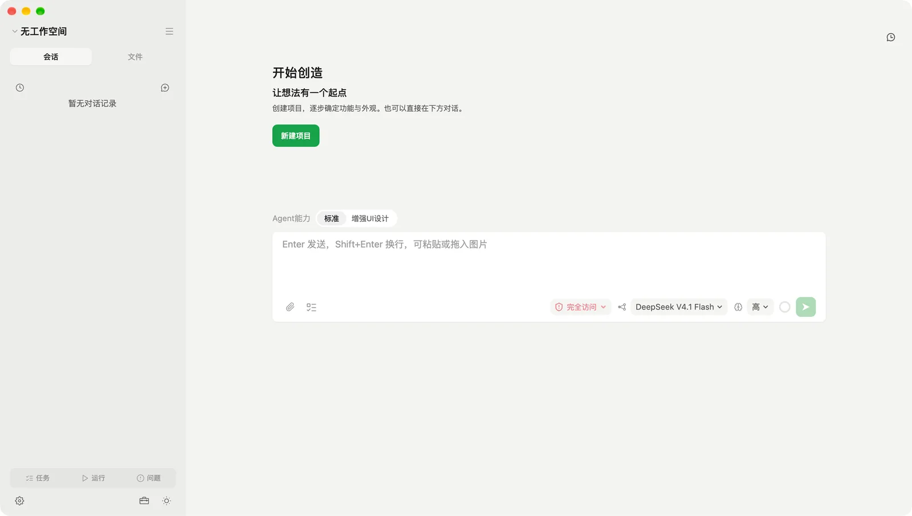
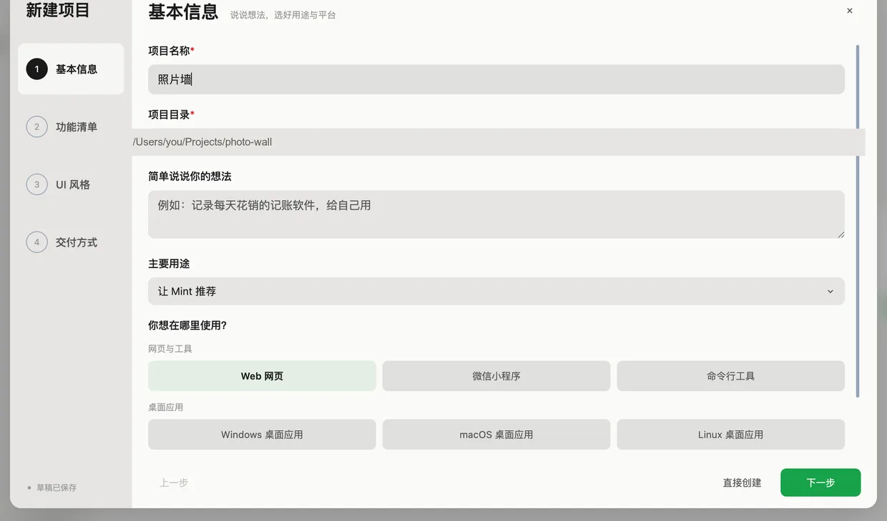
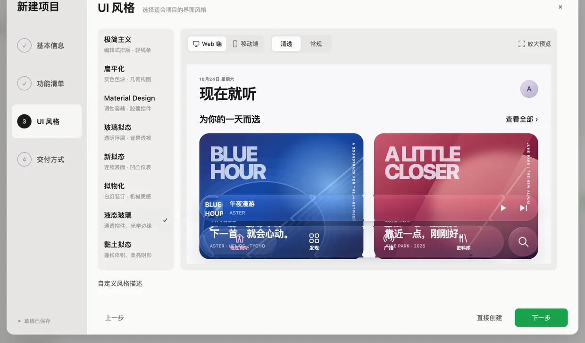
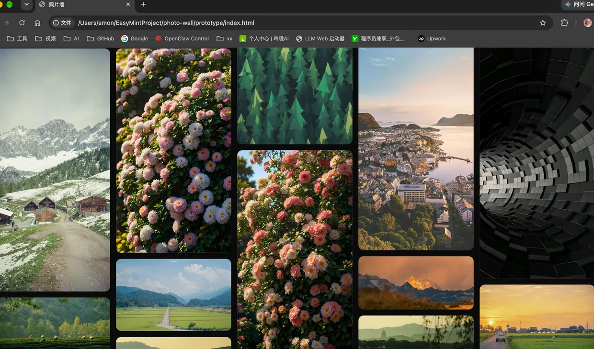
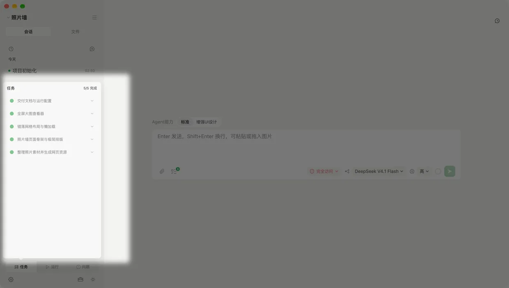
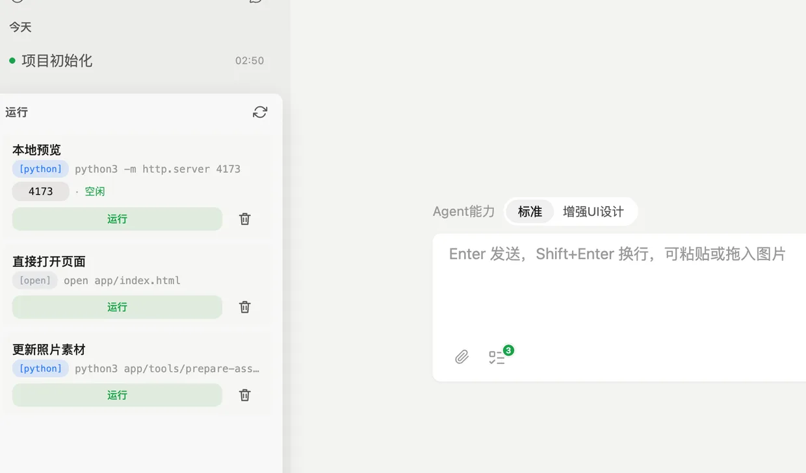
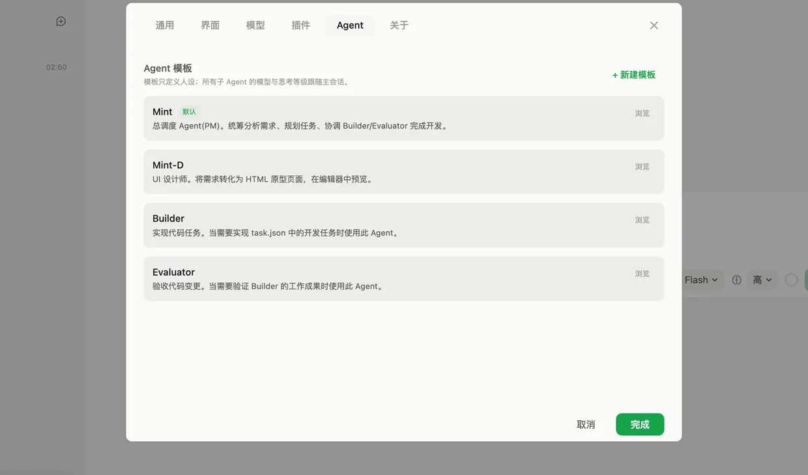
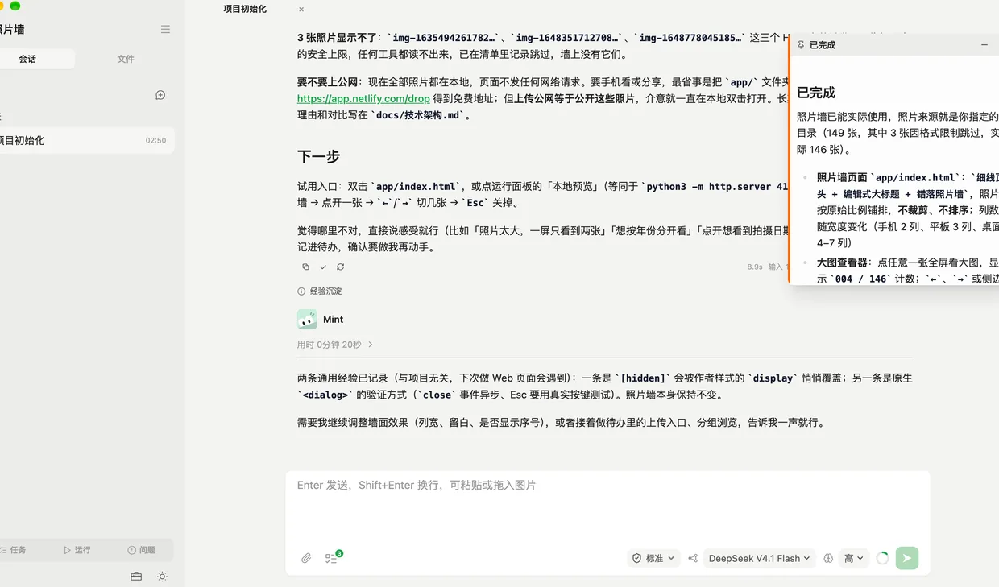

四个问题，定下项目范围
这是什么、给谁用、跑在哪、做成什么样。答案会变成项目范围，而不是聊天记录里的一段话。
- 每一步都能用现成选项开始
- 说不清的地方，让 Mint 先给一版再改
开源 · 桌面应用 · macOS / Windows / Linux
EasyMint 是一个桌面 AI 编程工作台。你先描述想法，它把需求问清楚、做出能点击的页面，再写成真正跑得起来的代码。不用会写代码。
免费开源 · 无需注册 · 项目与对话留在本机

从一句模糊的话，到能点开试用的页面，再到真正跑起来。点下面的圆点看每一步。
01/07
这是什么、给谁用、跑在哪、做成什么样。答案会变成项目范围，而不是聊天记录里的一段话。
15 套界面风格，每一套都以完整页面呈现，可以切网页，也可以切手机版。
界面类项目先出整套页面，试用确认之后再写正式实现，避免方向错了白做一遍。
每件事都拆成可勾选的条目，完成、进行中一眼看清；做不合格的会被退回重做。
启动项目、看端口、读日志都在同一个窗口里，不用另开终端，也不用记命令。
Mint 统筹需求与任务，Builder 写实现，Evaluator 对照需求验收，Mint-D 出界面原型。
一轮做完，交付结论直接可读；重要内容还能钉成便签，固定在会话旁边。







没有一句是需要你先学会才用得上的。
四步问答加随时追问，最后落成一份能施工的范围：功能、风格、完成度、预算。
界面类项目先出整套页面，点开就能试用。确认过再写正式实现，避免白做一遍。
实现、验收、设计、调研各有人负责，不是让一个角色什么都干。谁做的、做到哪一步都能看见。
任务清单、待办、运行面板就排在对话旁边。它做到哪、卡在哪，不用靠猜。
只读、标准、完全访问三档权限。默认档跑在系统沙盒内，写文件、读凭据都要过边界。
扫个码连上同一局域网里的电脑，就能远程发消息、看进度。项目仍在电脑上。
下载包都在 GitHub Releases，选你的系统即可。
macOS 用 .dmg，Windows 用 .exe 安装版（也有免安装的便携版），Linux 用 .AppImage 或 .deb。
安装包没有 Apple 开发者签名，系统会拦一次。点「完成」，不要点「移到废纸篓」，然后任选一种方式放行：
sudo xattr -rd com.apple.quarantine /Applications/EasyMint.app
或者在「系统设置 → 隐私与安全性」里点「仍要打开」。手动下载的新安装包需要再放行一次；应用内自动更新不需要。Windows 若提示 SmartScreen，点「更多信息 → 仍要运行」。
按引导配置即可：可以用订阅账号登录（Anthropic、OpenAI Codex、GitHub Copilot 等），也可以填任意兼容接口的 API Key。EasyMint 本身不需要注册账号。
对话按供应商规则计费；凭据只存在你自己的电脑上。
能。整个流程是按「先做选择、再逐项修改」设计的：你描述想要什么，判断做出来的东西对不对，不需要写提示词，也不需要看懂代码。当然，愿意看代码随时能看、能改。
可以。Anthropic、OpenAI Codex、GitHub Copilot、OpenRouter、Kimi、xAI 等支持在应用内用浏览器登录授权，用现有订阅即可；其余供应商填 API Key。
EasyMint 本身开源免费（MIT）。模型调用按你选择的供应商计费，应用内不额外收费。
项目文件和对话都存在你本机的 ~/.easymint/ 与项目目录里，EasyMint 没有账号系统、没有遥测。只有你发起的 AI 请求会带着相关上下文发给所选供应商，适用对方的隐私政策。
macOS（Apple 芯片）、Windows x64、Linux x64。手机端可以连同一局域网内的电脑远程使用，项目和会话仍留在电脑上。
它不是补全插件，而是一整套从需求、原型到运行的工作台：有项目定义、任务拆解、多角色协作、运行面板和权限边界。如果你只要代码补全，别的工具可能更轻便。
应用内自动更新，不需要重新下载、也不需要再放行。手动下载新安装包时才需要重新处理一次隔离标记。